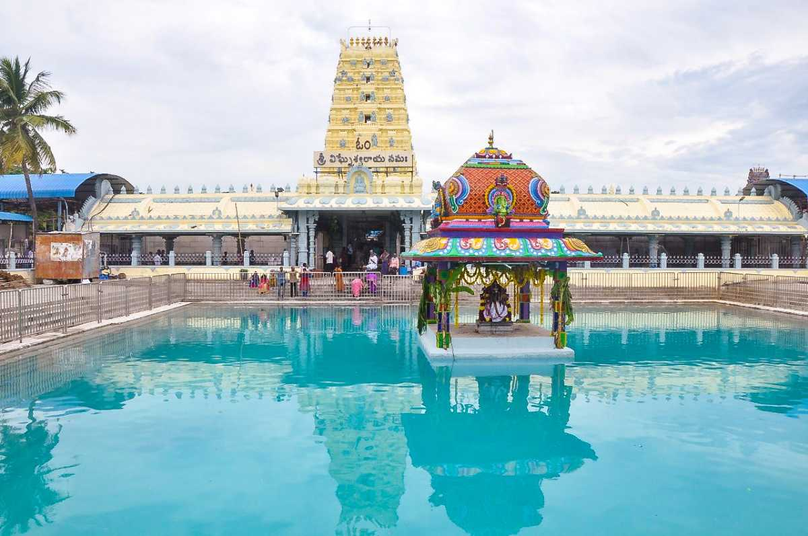
Kanipakam Vinayaka temple
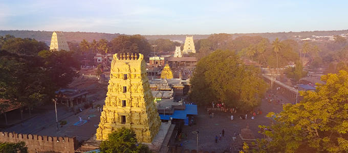
Srisailam Mallikarjuna Temple
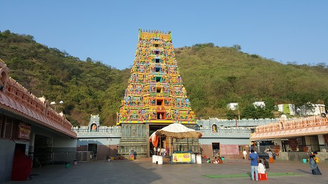
Kanaka Durga Temple
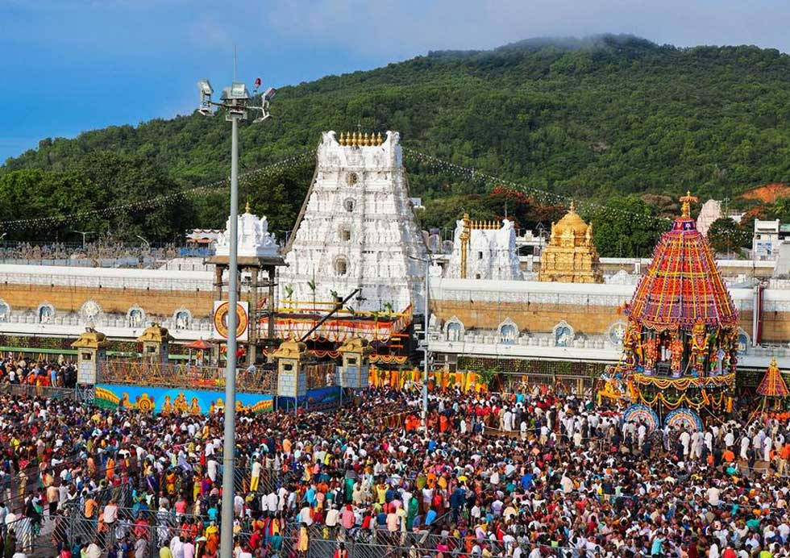
Tirumala Venkateswara Temple
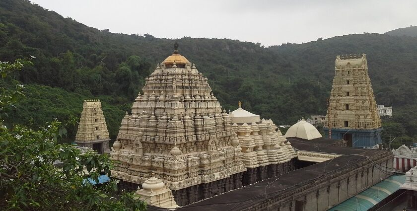
Simhachalam Temple
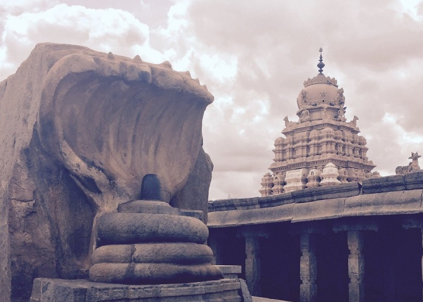
Lepakshi Veerabhadra Temple
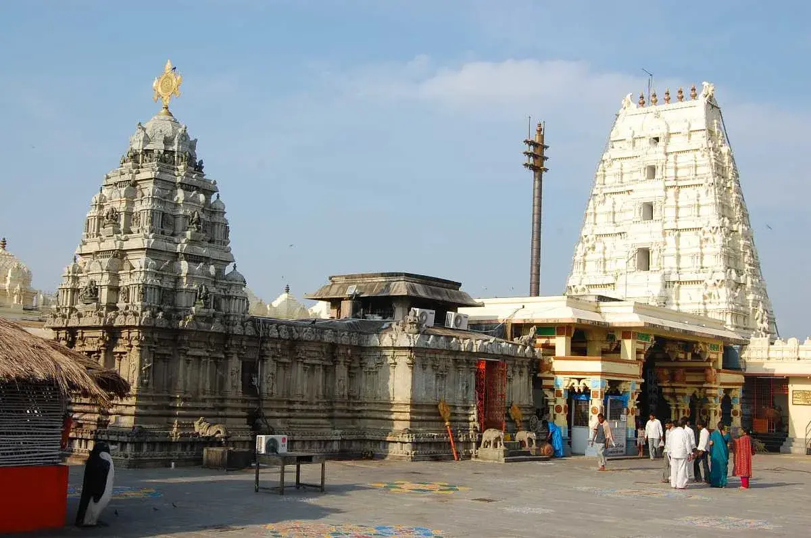
Sri Kalahasteeswara Temple
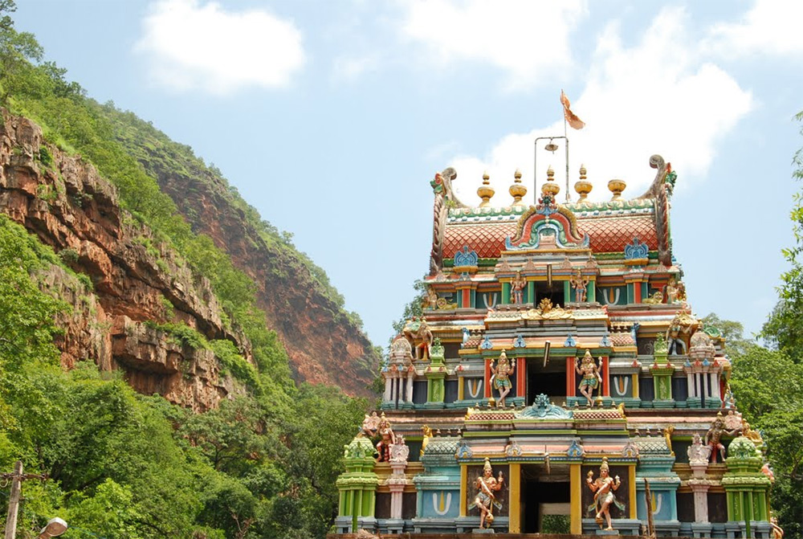
Ahobilam Temple
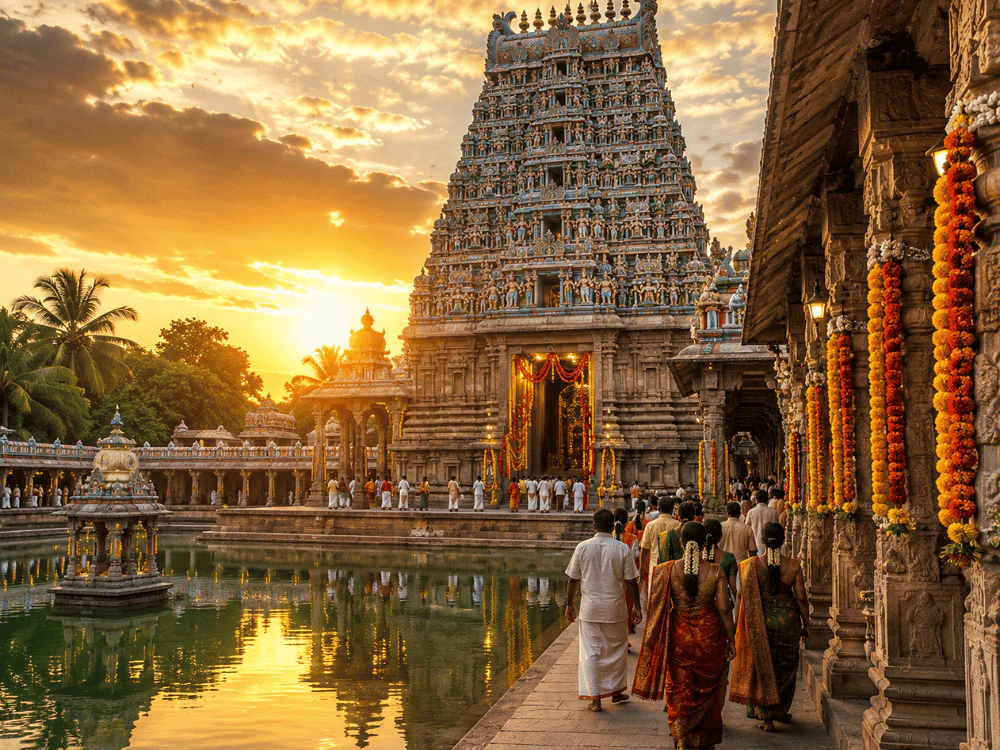
Sri Padmavati Temple-Tiruchanoor
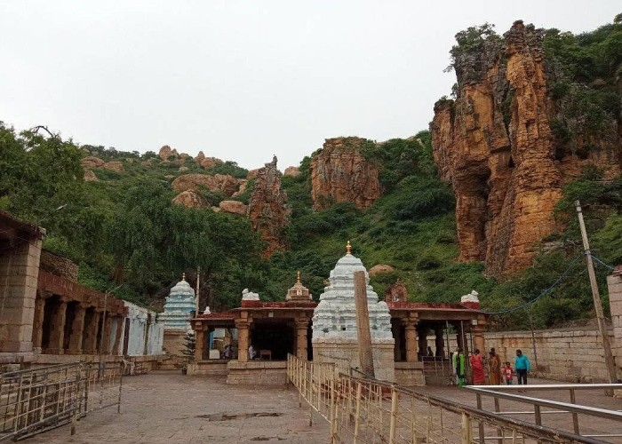
Yaganti Uma Maheswara Temple
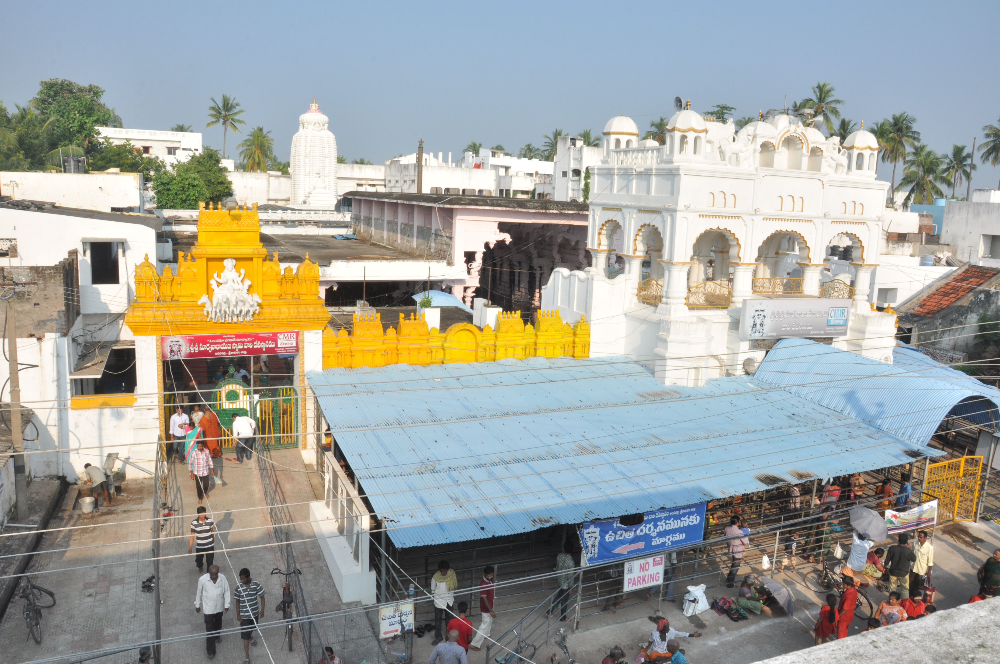
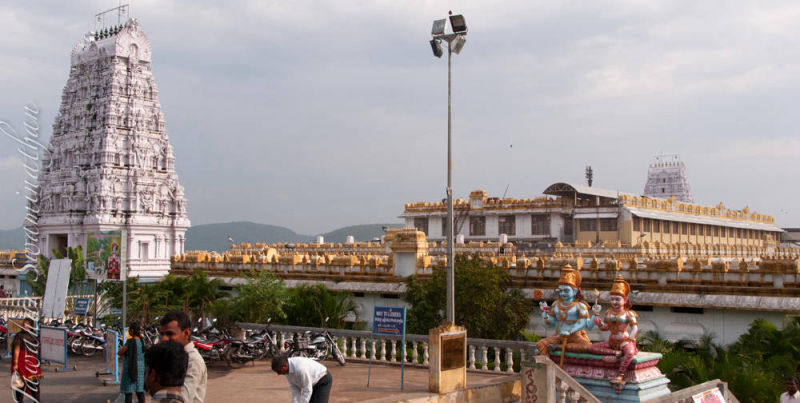
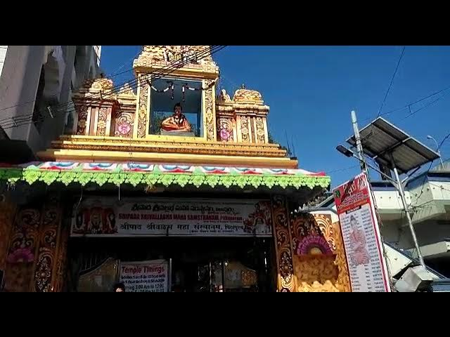
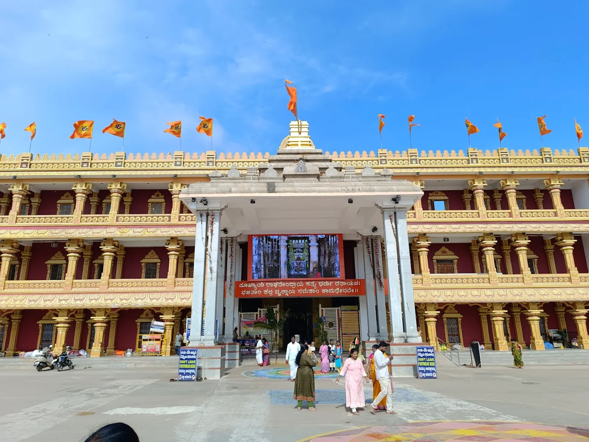
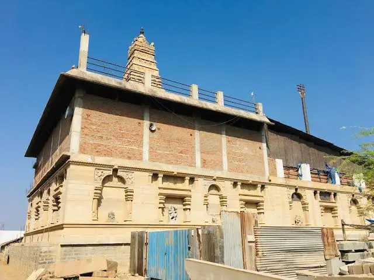
KANIPAKAM: “KANI” means one and a quarter land and, “PAKAM ” means the flow of water into the land i.e., irrigation.
There is a wound on the head of the Swayambhu idol to show that it was caused due to hitting of some iron weapon. “SWAMY” is always growing.
We can see the well surrounding the “SWAMY”, which is always flowing with water. During the rainy season, water will overflow.
Srisailam Mallikarjuna is located in the beautiful Nallamala hills. It is an important pilgrimage place for devotees of Lord Shiva and Goddess Parvati. This temple is also believed to be one of the 18 Maha Shakti Peethas, special temples for worshipping Shakti (the goddess).
According to legends, Lord Shiva and Goddess Parvati came here in the forms of Mallikarjuna (Shiva) and Bhramaramba (Parvati) to stay close to their son, Kartikeya.
Mallikarjuna Jyotirlinga stands as a testament to ancient Indian temple architecture because of its intricate carvings along with being a centre of great Shaivite shrines in India.
The roots of the temple trace back to the time of King Harihara Raya of Vijayanagar. Several rulers and kings such as Ikshvakus, Pallavas, Chalukyas, and Reddis contributed to the construction and maintenance of the structure. Chhatrapati Shivaji was also involved in the restoration of shrines.
According to the Shiva Purana, this sacred spot on Krauncha Mountain became home to a Jyotirlinga when Lord Shiva and Goddess Parvati appeared here to satisfy their son Kartikeya.
Kartikeya was upset because his younger brother, Lord Ganesh, had married before him. Another legend claims that on a moonless night, Lord Shiva arrived here as Arjuna, while on a night with a full moon, Goddess Parvati appeared as Mallika. As a result, the location became known as Mallikarjuna.
Nearest Airport: Rajiv Gandhi International Airport
Nearest Railway Station: Markapur Road Railway Station
Special Attraction: Visitors can enjoy the Jathra Mahotsavam in the month of March every year.
The only temple of Shiva where devotees are allowed to touch the Jyotirlinga called Sparsa Darshanam.
Srisailam has many other names like Srigiri, Sirigiri, Sriparvatam and Srinagam.
The temple of Kanaka Durga the Goddess of power, riches and benevolence and the presiding deity of Vijayawada, is thronged by lakhs of pilgrims for worship during the “Navarathri” festival.
Malleswara Swamy also has been worshiping by all the devotees. Since goddess Durga has been prevailing at the Southern direction to Lord Malleswara.
This Indrakeeladri renowned in the World as power prominent centre the “KANAKA DURGA KSHETRA”.
Lord Sri Venkateswara, also known as Srinivasa, Balaji, and Veṅkaṭachalapati, made Tirumala his abode five thousand years ago.
The height of the main entrance has been increased periodically since 13th century. Its present height is fifty feet. This entrance has other names such as ‘Padivaakili’ and ‘Simhadwaram’.
Tirupati laddu, also known as Tirumala laddu or Srivari laddu, is a popular sweet offered as prasadam at the Venkateswara Temple in Tirupati.
The laddu received a Geographical Indication (GI) tag in 2009 to protect its authenticity.
The idol is covered with sandalwood throughout the year and is revealed only once a year which is celebrated as Chandanotsavam.
The temple has 16-pillared Natyamandapa and 96-pillared Kalyanamandapa.
Simhachalam Temple is located in Vishakhapatnam (Vizag) of Andhra Pradesh, dedicated to Lord Narasimha Swamy, an incarnation of Lord Vishnu.
Veerabhadra temple is a Hindu temple located in the Lepakshi, in the state of Andhra Pradesh, India. The temple is dedicated to the Virabhadra, a fierce form of the god Shiva.
At the heart of the second enclosure stands the majestic main shrine dedicated to Virabhadra.
This awe-inspiring sanctuary, facing north, comprises the garbhagriha, antarala, pradakshina (circumambulatory passage), mukha mandapa, a pillared corridor around the mukhamandapa, and the natyamandapa.
SriKalahasti got its name because in days of yore a spider (sri), serpent (kala) and elephant (hasti) elephant worshipped Shiva with great devotion.
Siva in his aspect as Vayu is worshipped as Kalahasteeswara. The temple is also regarded as Rahu-Ketu kshetra and Dakshina Kailasam.
Adi Sankara is said to have visited this temple and offered worship here.
Ahobilam Kshetra has nine temples of Lord Narasimha, the self-manifested deities of the Lord. "Jwala Ahobila Malola Kroda Karanja Bhargava Yogananda Kshatravata Pavana Nava Murthayaha".
According to the Brahmanda Purana, Ahobilam is the Avatara Sthala of Bhaghavan Narasimha, and it is a Kruthayuga Kshetra.
The Jeers of Ahobila Matha have taken many painstaking steps for the development of Ahobilam and created many pilgrim facilities.
Tiruchanoor, is one of the oldest pilgrim towns located 5km away from Tirupati, is abode of Goddess Sri Padmavathi Devi, the beloved consort of Lord Venkateswara.
This pilgrim centre is popularly known as “Alar melmangapuram” (Alar-Lotus, Mel-top, Manga-Goddess, Puram-town) or Alimelumangapuram.
This place became famous by the name “Alarmelmangapuram”. There is a strong belief among the pilgrims that they should pave visit to Padmavathi and seek Her divine blessings before they visit Lord Venkateswara at Tirumala during their pilgrimage.
Sri Uma Maheswara Temple or Yaganti Basavanna can be found in the Nallamala forest range in Nandyal district of the state of Andhra Pradesh.
It is believed that Lord Shiva, in the form of the Shivalinga, was seen in a naturally formed cave. In addition to being one of the Jyotirlingas, it serves as the northern entryway to Srisailam.
Another exciting aspect is the history of the Yaganti Temple Nandi, which is a huge idol of Nandi, the holy bull of Lord Shiva. It is said that in 400 years, the size of the Nandi statue has grown significantly. It is made of a single rock, and temple authorities claim they had to remove a pillar from its side as the stature grew.
The Suryanarayana Temple in Domlur is one of the most beautiful modern temples in India! It is superbly constructed by expert artisans in the rich Chola temple architecture style.
The temple is buildt in such a way as to make the Sun Rays focus on the feet of the God twice in the year in the months of March and September in the early hours of the day .
The rays so focused on the feet of the Idol through the five entrance gates of the temple , remain for a few minutes .
Annavaram is one of the most famous Holy Shrines in India and enjoying second place after Tirupati in Andhra Pradesh.
The presiding deity Lord Satyadeva with his consort Sri Anantha Lakshmi on one Side and with Lord Siva on the other side took his abode on Ratnagiri, which is named after Ratnakara, son of Meru the king of holy mountains.
Sri Satyanarayana Swamy at Annavaram is also followed by sacred Pampa River touching the feet of the hill.
Lord Sripada Srivallabha is the first and Foremost Incarnation (Avatar) of Jagatguru Sri Dattatreya,is well-known as Sripada Srivallabha′s Incarnation took place in 1320 AD. at Srikshetra Pithapuram of Bharata Desa (India).
He is a special phenomenon much beyond the Trinity i.e. Brahma, Vishnu and Maheswara.
The Aim of his Incarnation is to bless Maha Siddhas, Maha Yogis and to Uphold Dharma through them in the Universe.
Sri Raghavendra Swamy Mutt belongs to the lineage (parampara) of Hamsa naamaka Paramaatma, adorned, in the early phase of its history, by various Tapaswis and Rishis.
Sri Madhwacharya, the proponent of Dwaita Vedanta, had formally launched this Mutt, with His Sishya, Sri Padmanabha Tirtha as its Prime Guru. Many scholarly Gurus and Tapaswis, such as, Sri Jayatirtha, Sri Ramachandra Tirtha, Sri Vibudhendra Tirtha, Sri Jitamitra Tirtha, Sri Raghunandana Tirtha, Sri Surendra Tirtha, Sri Vijayindra Tirtha, Sri Sudhindra Tirtha and Sri Raghavendra Tirtha, have embellished this Parampara, by taking upon the position of Main Pomtiff of this Mula Mutt.
Sri Jagajjanani, the mother of the universe, embodies the nurturing and protective aspect of the Supreme. Content to be provided.
Sri Jagajjanani Temple is 2nd temple of its kind dedicated to the Mother of the world including all Gods and Goddesses. The first temple dedicated to Sri Jagajjanani is situated in Himalayas near Lake ManasaSarovaram. The temple was built by Mr. Siva Naga Pullaiah garu with the help of his friends and Nandyal villagers.
According to the legends, Sri Jagajjanani Matha decided to start the life on earth and incarnated herself in Himalayas near ManasaSarovaram Lake. It is believed that the Goddess incarnated herself in Nandyal after Himalayas. The present temple in Nandyal was built by Mr. Siva Naga Pullaiah garu with the help of his friends and villagers.
The gopuram of this temple consist of all the forms of Gods and Goddesses and thus making it rare and sacred in itself. The idol of Sri Jagajjanani situated in the temple is one of the rarest idols in the world. The idol consists of 8 hands and 5 faced Shiva in her Stomach, 4 faced Brahma in her left 3rd hand and Sri Maha Vishnu at her Feet. On the right hand side, she holds Moon in 1st hand, Earth in 2nd hand, Sun, Lakshmi Devi in 3rd hand, 3rd eye, The Trisulam in the 4th hand. Brahma came from the stomach navel in thread of Lotus of Vishnu. And also she is sitting on her vehicle lion, under a Big Snake which contains 17 heads as an Umbrella.
06:00 AM to 01:00 PM and from 02:00 PM to 09:00 PM (Everyday)
Not Allowed: The Children below and equal to 15 years of age are not allowed into Inner Room (Garbalayamu) of the Sri Jagajjanani Temple.
Wear modest clothes and avoid shorts. Trendy outfits is strictly restricted inside the temple premises
Navaratri
Morning pooja and arati starts from 06:00 AM. Thereafter, daily pooja's to be performed to goddess Durga. Pournami Poojas, Rahu Kala Poojas and Amavasya are performed on regular basis in the temple. These poojas are performed here every day as per the schedule. There is a belief among devotees that if someone starts a pooja on a particular day, he should perform the same pooja on same day for 21 weeks.